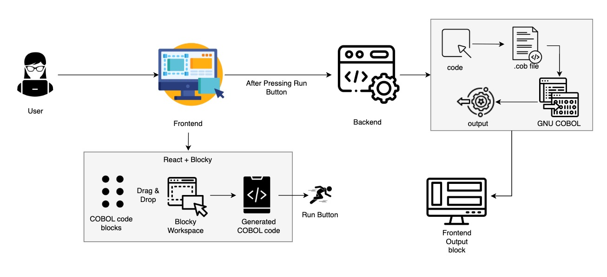

COBMAKER is an innovative, browser-based learning environment designed to teach COBOL—a foundational legacy programming language—using modern visual programming principles. Targeted at novice programmers and those transitioning into legacy system maintenance, COBMAKER leverages intuitive drag-and-drop interfaces, hierarchical section visualizations, and real-time code generation to bridge the gap between modern learning styles and the structured syntax of COBOL. COBMAKER transforms traditionally tedious COBOL education into an engaging, interactive experience. Inspired by the success of visual programming platforms like Scratch and Blockly, COBMAKER is the first comprehensive visual learning platform built specifically for COBOL, empowering the next generation of developers to sustain and innovate on critical legacy infrastructure.
Software Requirements:
Hardware Requirements:
Hardware and Operating System:
react-scripts 5.0.1)The tool consists of a frontend built using React and a backend powered by Flask.
For a live demo, visit: https://cobol-visualizer.vercel.app/
Follow the steps below to run COBMAKER locally on your machine:
git clone https://github.com/satish-pati/COBMAKER.gitcd COBMAKER
cd clientnpm install
cd ../serverpython3 -m venv venv
source venv/bin/activate
pip install -r requirements.txt
python3 app.py
cd ../clientnpm start
Open a Chromium-based browser and go to the following address:
http://localhost:3000
Once both servers are running, you can start using COBMAKER to visualize and assess COBOL code interactions.
The interface is divided into three main panels: the left panel contains various categorized blocks ; the center panel features a Blockly workspace where users can arrange these blocks to form logical programs; and the right panel displays the live COBOL code generated from the assembled blocks, along with the output after execution. The frontend is built using React for UI rendering, Blockly for block manipulation and code generation, Axios for client-server communication, and CSS for responsive design. The backend is powered by Python Flask (or optionally Node.js) and uses GnuCOBOL (cobc) to compile and execute the generated COBOL code. The user workflow is simple and engaging: users drag blocks into the workspace, view the real-time COBOL code generated on the right, and click “Run” to compile and execute the code on the backend. The tool is ideal for learners and developers interested in exploring COBOL through a modern, visual approach.
Satish Pati,Raghavendra Pappu,Sridhar Chimalakonda